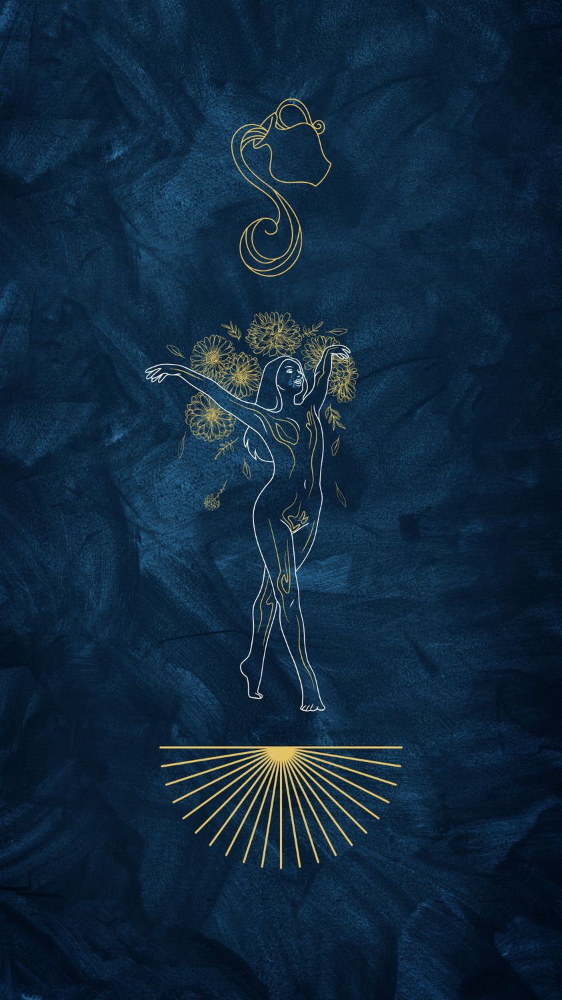

Kova
20 Ocak – 18 Şubat · Element: Hava · Yönetici: Uranüs/Satürn

Genel Profil
Kova; yenilik, özgünlük ve farklı bakış açısıdır. Sistem kurar, geleceği düşünür.
Duygusal mesafe oluşursa yanlış anlaşılabilir; niyetini net ifade etmek işe yarar.
Güçlü Yönler
- Özgünlük
- Vizyon
- Analitik zihin
- Toplumsal farkındalık
Zorlayıcı Yönler
- Mesafeli görünme
- İnat
- Beklenmedik kopuşlar
- Duyguları rasyonalize etme
Aşk
Önce arkadaşlık; zihinsel uyum ve özgür alan ister.
Kariyer
Teknoloji, AR-GE, veri, inovasyon, sosyal projeler ve topluluklar.
İpucu
Bugün “farklı” bir çözüm dene: 1 alternatif üret ve test et.